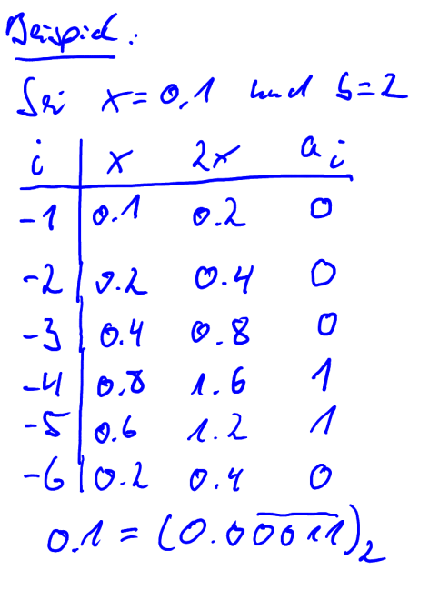

Mathe Klausur
Vorlesung 1: Logik und Stellenwertsysteme
Elementare Logik
Verknüpfung von Aussagen
Zwei Aussagen A und B logisch verknüpft werden:
- Äquivalenz: A⟺ B : A gilt genau dann, wenn B gilt
- Implikation: A⟹B : Wenn A gilt, dann gilt auch B
- Konjunktion: A∧B : Gilt wenn A und B wahr sind
- Disjunktion: A∨B : Gilt wenn A oder B wahr sind
- Exklusives Oder: A⊕B : Gilt wenn entweder A oder B wahr ist
Quantor
Es gibt zwei Arten an Quantoren
- Existenzquantor (∃): Es existiert minestens eine Zahl
Beispiel: x+1=2
⟺∃x∈ℤ: x+1=2
- Allquantor (∀): Gilt für alle Zahlen
Beispiel: x>-1
⟺∀x∈ℤ>0: x>-1
Stellenwertsysteme
STELLENWERTSYSTEMBERECHNER: https://www.arndt-bruenner.de/mathe/scripts/Zahlensysteme.htm
Die Anzahl der Ziffern in einem Stellenwertsystem heißt Basis b.
Dezimalsystem: Basis 10 = alle Ziffern von 0-9
Binärsystem: Basis 2 = 0 und 1
Hexadezimalsystem: Basis 16 = 0-9,A,B,C,D,E,F (A ist 10, B ist 11 ...)
Umrechnung
Umrechnen in Dezimalsystem
(10FA)₁₆ Die 16 ist die Basis und zeigt, dass 10FA eine Hexadezimalzahl ist
Bei dem Umrechnen nimmt man zuerst den Einer (hier A). Diesen rechnet man in eine Dezimalzahl (A = 10).
Dannach gehen wir eine Stelle nach links und rechnen diese um (F = 15).
Das Ergebnis Multiplizieren wir mit der Basis (16) hoch der aktuellen stelle (F ist die erste Stelle nach dem Einer. Deswegen rechnen wir 15*16^1 = 240).
Wir machen dies mit allen Stellen und addieren die Ergebnisse miteinander.
(10FA)₁₆ = 10+240+0+4096 = 4346
Bei Nachkommerstellen rechnet man die Zahl mal Basis hoch der Negativen stelle ((0,A)₁₆ = 10*16^-1 = 0,625)
Umrechnen von Dezimalsystem ohne Nachkommerstellen
Erst muss x (die Dezimalzahl, welche umgerechnet wird) und b (das Stellenwertsystem in welches gerechnet wird) gegeben sein
(x = 4346, b = 16) erst rechnet man x/b. (4346/16 = 271,625)
Dannach nimmt man den rest (0,625) und rechnet diesen geteilt ducrch der Basis hoch -1 (0,625/16^-1 = 10)
Wenn das Ergebnis über 9 ist rechnet man das in das dementsprechende Stellenwertsystem um (10 = A)
Nun rechnet man das Ergebnis der ersten Rechnung (271) / durch die Basis. Wenn kein Rest da bleibt ist die Stelle 0 (271/16 = 16,9375 | 0,9375/16^-1 = 15 | 15 = F | 16/16 = 1 | 0 = 0 |)
Wenn x kleiner ist als b rechnet man x einfach in das Stellenwertsystem um (1 = 1)(Ergebnis: 10FA)
Umrechnen von Dezimalsystem mit Nachkommerstellen
